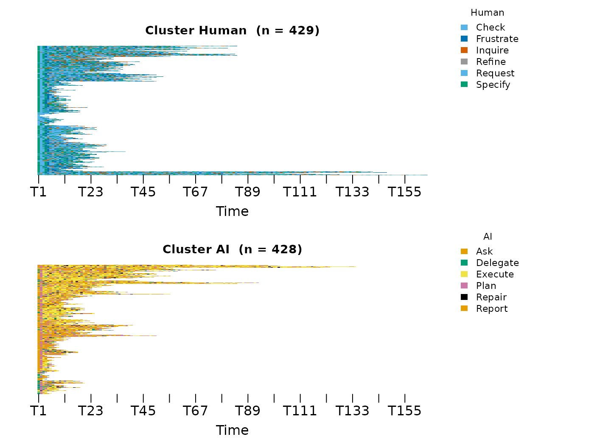
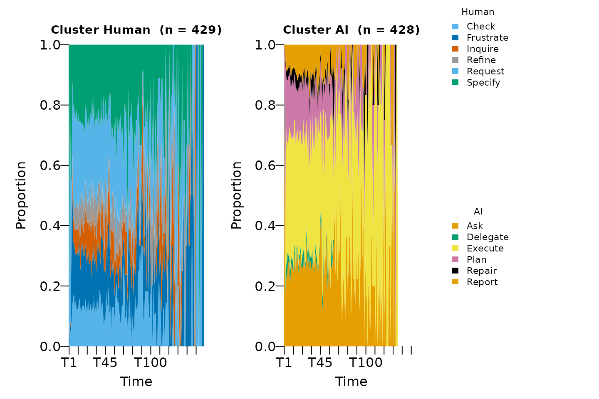
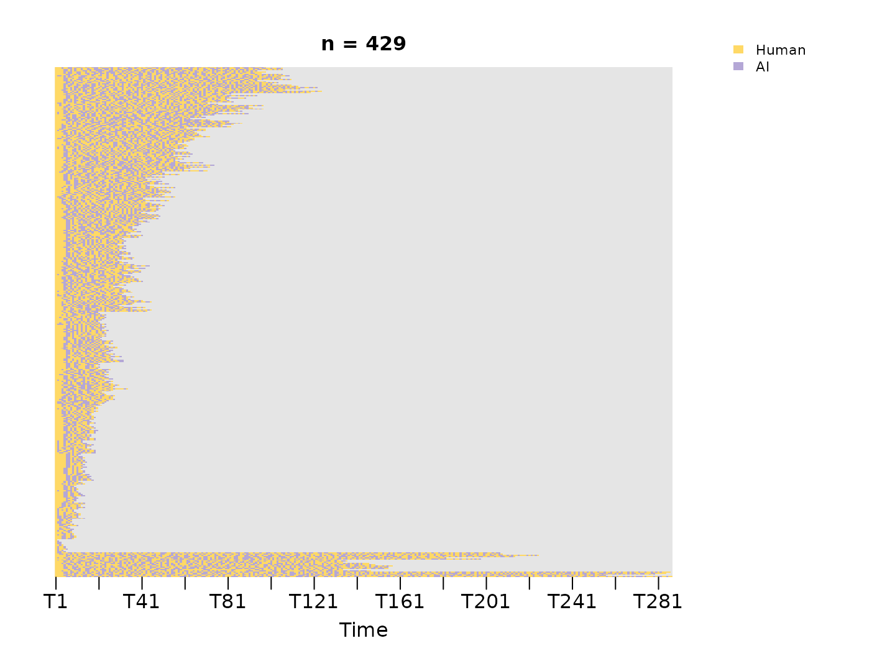
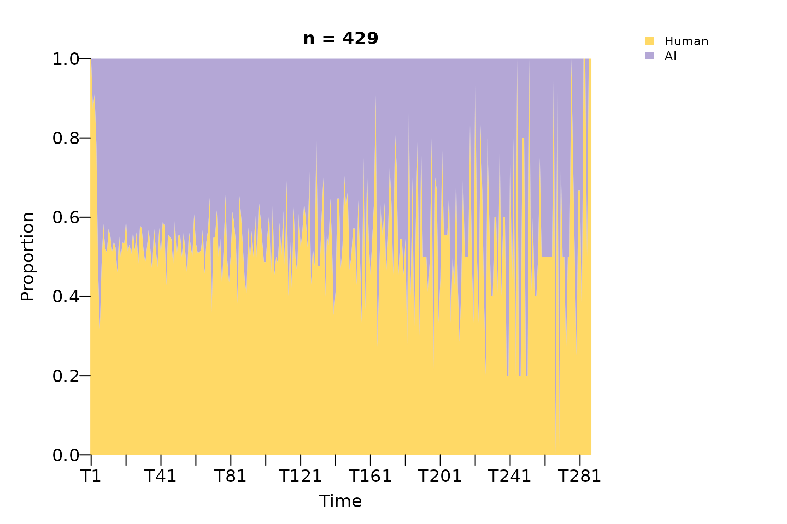
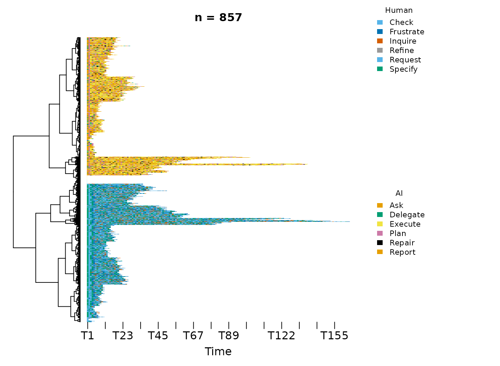
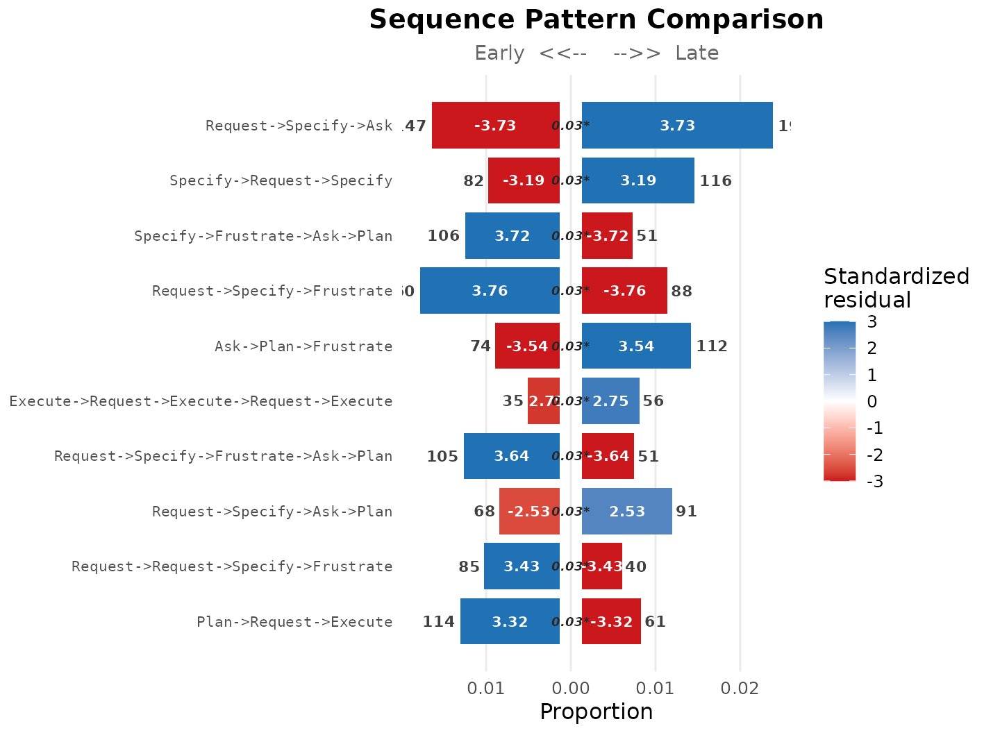

Sequences and patterns
Written by Mohammed Saqr and Sonsoles López-Pernas
Source:vignettes/articles/sequences-and-patterns.Rmd
sequences-and-patterns.RmdA transition network compresses a set of sessions into one matrix of single-step transitions. The compression keeps the structure of the interaction, which codes lead to which, but it discards two things that questions about human-AI collaboration often need. The first is time: when in a session each actor acts, whether sessions open with a long human specification or with an immediate request, and how long each actor holds the turn. The second is longer patterns: a human request answered by an AI execution and followed by another request is a unit of collaboration that a network splits into two independent edges.
This guide covers the views of a heterogeneous network that keep
these features. Sequence plots draw every session as a row of coded
events, either coloured by code or by actor. Meta-paths count recurring
runs of codes and their actor templates, such as
Human->AI->Human, and compare them with the
frequencies expected if the codes followed each other independently.
Association rules describe which codes occur together in the same
session, regardless of order. Sequence comparison tests which patterns
distinguish two groups of sessions.
Data
human_ai holds 429 sessions of human-AI pair
programming; each row is one coded event.
-
Session:
session_id; one row of a sequence plot. -
Code:
code; six human codes (Specify, Request, Frustrate, Check, Inquire, Refine) and six AI codes (Delegate, Plan, Execute, Ask, Repair, Report). -
Actor type:
actor_type,"Human"or"AI"; the actor of each code. -
Order:
order_in_session; the position of the event in its session. -
Cohort:
phase,EarlyorLate; used for the group comparison.
data(human_ai)
net <- build_htna(human_ai, actor_type = "actor_type")How does each actor’s work unfold within a session?
sequence_plot_htna() extracts each actor’s events from
every session and draws them as one row per session and actor, coloured
by code. The default index layout has one panel per actor, with sessions
ordered so that similar sequences lie next to each other.
sequence_plot_htna(net)
The human panel is dominated by requests and specifications and the AI panel by executions and asks; long runs of one colour along a row are the repeated moves that appear as self-transitions in the network. The legend is split by actor, so each code is read under the actor that owns it.
The distribution layout summarizes the same information over
sessions: at each position, the share of sessions in each code. Because
each actor’s row is empty at the positions where the other actor acted,
na = FALSE leaves those positions out, so the shares are
within the actor.
sequence_plot_htna(net, type = "distribution", na = FALSE)
How do the actors take turns?
With by = "group", every event of the combined session
is coloured by its actor, which turns the plot into a display of
turn-taking. Rows with many short stripes are sessions in which the
actors alternate quickly; long blocks of one colour are stretches in
which one actor holds the turn.
sequence_plot_htna(net, by = "group")
The distribution layout gives the share of sessions in which each actor acts at each position, so it shows whether either actor dominates the openings or the later stages of the sessions.
sequence_plot_htna(net, by = "group", type = "distribution")
The heatmap layout draws the sessions as one carpet, with the actors separated by a white band; it compares session lengths and the uniformity of the sessions at a glance.
sequence_plot_htna(net, type = "heatmap")
Which turn-taking templates recur?
extract_meta_paths() with level = "type"
replaces every code by its actor and counts the resulting templates. For
runs of two events, the four templates are the four blocks of the
network.
extract_meta_paths(net, level = "type", length = 2)
#> Meta-paths (type-level) over 429 sequences
#> Rows: 4 | Lengths: 2 | Gaps: 0
#> schema length gap count n_seq support frequency lift
#> Human->AI 2 0 5970 428 0.998 0.316 1.28
#> AI->Human 2 0 5693 424 0.988 0.301 1.22
#> Human->Human 2 0 4674 422 0.984 0.247 0.79
#> AI->AI 2 0 2581 403 0.939 0.136 0.70Handovers dominate: a human event is followed by an AI event 5,970 times and an AI event by a human event 5,693 times, against 4,674 human-human and 2,581 AI-AI pairs. The lift compares each count with the count expected if consecutive events were independent given the overall share of each actor; handovers occur 1.28 and 1.22 times as often as expected, continuations of the same actor less often than expected (0.79 and 0.70). The interaction is alternating rather than a series of monologues.
Longer templates show how the alternation is organized. For runs of four events:
print(extract_meta_paths(net, level = "type", length = 4), n = 8)
#> Meta-paths (type-level) over 429 sequences
#> Rows: 16 | Lengths: 4 | Gaps: 0
#> schema length gap count n_seq support frequency lift
#> AI->Human->Human->AI 4 0 2276 389 0.907 0.126 2.07
#> AI->Human->AI->Human 4 0 1984 356 0.830 0.110 1.81
#> Human->AI->Human->AI 4 0 1791 337 0.786 0.099 1.63
#> Human->AI->AI->Human 4 0 1772 394 0.918 0.098 1.61
#> Human->AI->Human->Human 4 0 1718 366 0.853 0.095 1.24
#> Human->Human->AI->Human 4 0 1574 358 0.834 0.087 1.13
#> Human->Human->AI->AI 4 0 1492 391 0.911 0.083 1.36
#> AI->AI->Human->Human 4 0 1110 323 0.753 0.061 1.01
#> ... (8 more)The most frequent four-event template is
AI->Human->Human->AI, an AI move answered by two
human moves before the AI acts again (2,276 occurrences in 389 sessions,
lift 2.07). Strict alternation
(AI->Human->AI->Human, lift 1.81) is next. The
human more often takes two consecutive turns between AI moves than the
AI does between human moves.
Which concrete paths realize a template?
A schema restricts the search to one template and
returns its concrete instances, each with the template in
meta_schema. Elements can be actor types, codes or
* for any element.
print(extract_meta_paths(net, schema = "Human->AI->Human"), n = 8)
#> State-level instances of schema 'Human->AI->Human' over 429 sequences
#> Rows: 163 | Lengths: 3 | Gaps: 0
#> schema meta_schema length gap count n_seq support frequency
#> Request->Execute->Request Human->AI->Human 3 0 401 194 0.452 0.112
#> Specify->Execute->Request Human->AI->Human 3 0 176 107 0.249 0.049
#> Request->Ask->Request Human->AI->Human 3 0 130 91 0.212 0.036
#> Check->Execute->Request Human->AI->Human 3 0 123 96 0.224 0.034
#> Specify->Ask->Request Human->AI->Human 3 0 120 84 0.196 0.033
#> Specify->Execute->Frustrate Human->AI->Human 3 0 114 88 0.205 0.032
#> Request->Execute->Frustrate Human->AI->Human 3 0 106 88 0.205 0.030
#> Request->Execute->Inquire Human->AI->Human 3 0 97 76 0.177 0.027
#> lift
#> 5.00
#> 2.33
#> 2.19
#> 3.67
#> 2.15
#> 2.57
#> 2.24
#> 4.40
#> ... (155 more)The 163 concrete paths of the Human->AI->Human
template are led by a request, an AI execution and another request (401
occurrences in 194 sessions, 45.2% of the sessions), which occurs five
times as often as expected (lift 5.00). The request-execute-request loop
is the backbone of these sessions. Its mirror image, the AI side of the
alternation, is found with the template
AI->Human->AI, here restricted to paths at least
twice as frequent as expected:
print(extract_meta_paths(net, schema = "AI->Human->AI", min_lift = 2), n = 8)
#> State-level instances of schema 'AI->Human->AI' over 429 sequences
#> Rows: 47 | Lengths: 3 | Gaps: 0
#> schema meta_schema length gap count n_seq support frequency lift
#> Execute->Request->Execute AI->Human->AI 3 0 391 180 0.420 0.142 4.65
#> Plan->Request->Execute AI->Human->AI 3 0 175 145 0.338 0.064 4.18
#> Execute->Request->Ask AI->Human->AI 3 0 129 90 0.210 0.047 2.07
#> Execute->Check->Execute AI->Human->AI 3 0 124 78 0.182 0.045 3.52
#> Plan->Check->Execute AI->Human->AI 3 0 105 97 0.226 0.038 6.00
#> Execute->Inquire->Execute AI->Human->AI 3 0 104 64 0.149 0.038 4.50
#> Plan->Request->Ask AI->Human->AI 3 0 75 60 0.140 0.027 2.42
#> Execute->Inquire->Ask AI->Human->AI 3 0 52 49 0.114 0.019 3.03
#> ... (39 more)Execute->Request->Execute is the AI-centered view
of the same loop (391 occurrences, lift 4.65). The pattern with the
highest lift among those shown, Plan->Check->Execute
(lift 6.00), is a human check between an AI plan and its execution.
Patterns need not be contiguous. With type = "gapped"
the elements of a path are gap + 1 positions apart, which
describes what happens two moves later regardless of the move in
between.
extract_meta_paths(net, level = "type", length = 3, type = "gapped", gap = 1)
#> Meta-paths (type-level) over 429 sequences
#> Rows: 8 | Lengths: 3 | Gaps: 1
#> schema length gap count n_seq support frequency lift
#> Human->AI->Human 3 1 3265 408 0.951 0.185 1.35
#> Human->Human->AI 3 1 2722 413 0.963 0.154 1.12
#> AI->Human->AI 3 1 2515 379 0.883 0.143 1.31
#> AI->Human->Human 3 1 2242 391 0.911 0.127 0.92
#> Human->Human->Human 3 1 2146 372 0.867 0.122 0.70
#> Human->AI->AI 3 1 1748 384 0.895 0.099 0.91
#> AI->AI->Human 3 1 1618 360 0.839 0.092 0.84
#> AI->AI->AI 3 1 1382 304 0.709 0.078 0.91Even with one event skipped between the elements,
Human->AI->Human remains the most frequent template
(3,265 occurrences, lift 1.35).
Which codes occur together in a session?
Association rules ignore order and ask which codes appear together in
the same session. association_rules_htna() treats each
session as the set of its codes and keeps the rules above the support,
confidence and lift thresholds.
rules <- association_rules_htna(net, min_support = 0.3, min_confidence = 0.8,
max_length = 3L)
rules
#> Association Rules [499 rules | 12 items | 429 transactions]
#> Support >= 0.30 | Confidence >= 0.80 | Lift >= 1.00
#>
#> Top rules (by lift):
#> 1. Check, Report -> Inquire (sup=0.401 conf=0.831 lift=1.37)
#> 2. Plan, Report -> Inquire (sup=0.434 conf=0.812 lift=1.34)
#> 3. Execute, Report -> Inquire (sup=0.424 conf=0.805 lift=1.32)
#> 4. Ask, Report -> Inquire (sup=0.429 conf=0.803 lift=1.32)
#> 5. Frustrate, Report -> Inquire (sup=0.429 conf=0.803 lift=1.32)
#> 6. Inquire, Refine -> Check (sup=0.347 conf=0.937 lift=1.22)
#> 7. Inquire, Report -> Check (sup=0.401 conf=0.915 lift=1.19)
#> 8. Refine -> Check, Frustrate (sup=0.469 conf=0.863 lift=1.18)
#> 9. Refine, Report -> Check (sup=0.322 conf=0.908 lift=1.18)
#> 10. Report -> Check, Frustrate (sup=0.473 conf=0.857 lift=1.17)
#> ... and 489 more rulesWith support of at least 0.3 and confidence of at least 0.8, 499
rules remain. The rules with the highest lift link the AI’s
Report to the human’s Inquire: sessions that
contain an AI report together with a human check, or with an AI plan,
execution or ask, contain a human inquiry in more than 80% of cases
(confidence 0.803 to 0.831), 1.32 to 1.37 times as often as sessions in
general. Session-level co-occurrence is a coarser view than the paths
above and complements them.
Which patterns distinguish early from late sessions?
sequence_compare_htna() counts every pattern of three to
five codes in two cohorts of sessions and tests, by permuting whole
sessions between the cohorts, whether its frequency differs between
them. P-values are adjusted for the number of patterns (false discovery
rate). Each pattern also has a standardised residual per cohort
(Haberman, 1973): a positive residual means the pattern is more frequent
in that cohort than independence of pattern and cohort predicts. The
permutations are random, so a seed is set first.
set.seed(2026)
grp <- build_htna(human_ai, actor_type = "actor_type", group = "phase")
res <- sequence_compare_htna(grp, sub = 3:5, min_freq = 25L, iter = 500L)
res
#> Sequence Comparison [106 patterns | 2 groups: Early, Late]
#> Lengths: 3, 4, 5 | min_freq: 25 | permutation: 500 iter (fdr)
#>
#> pattern length freq_Early freq_Late prop_Early
#> Request->Specify->Ask 3 147 197 0.01509
#> Specify->Request->Specify 3 82 116 0.00842
#> Specify->Frustrate->Ask->Plan 4 106 51 0.01112
#> Request->Specify->Frustrate 3 160 88 0.01642
#> Ask->Plan->Frustrate 3 74 112 0.00760
#> Execute->Request->Execute->Request->Execute 5 35 56 0.00376
#> Request->Specify->Frustrate->Ask->Plan 5 105 51 0.01127
#> Request->Specify->Ask->Plan 4 68 91 0.00714
#> Request->Request->Specify->Frustrate 4 85 40 0.00892
#> Plan->Request->Execute 3 114 61 0.01170
#> prop_Late resid_Early resid_Late effect_size p_value
#> 0.02252 -3.73 3.73 5.19 0.0326
#> 0.01326 -3.19 3.19 4.99 0.0326
#> 0.00598 3.72 -3.72 4.93 0.0326
#> 0.01006 3.76 -3.76 4.83 0.0326
#> 0.01280 -3.54 3.54 4.50 0.0326
#> 0.00673 -2.75 2.75 4.35 0.0326
#> 0.00613 3.64 -3.64 4.12 0.0326
#> 0.01066 -2.53 2.53 4.03 0.0326
#> 0.00469 3.43 -3.43 3.66 0.0326
#> 0.00697 3.32 -3.32 3.58 0.0326
#> ... and 96 more patternsOf the 106 patterns that occur at least 25 times in each cohort, the comparison counts how many differ at an adjusted p-value below 0.05:
Thirteen patterns distinguish the cohorts. The late sessions contain
more Request->Specify->Ask (residual 3.73 in the late
cohort) and Ask->Plan->Frustrate; the early sessions
contain more Request->Specify->Frustrate and
Specify->Frustrate->Ask->Plan (residuals 3.76 and
3.72 in the early cohort). Frustration therefore sits at different
points of the request-plan cycle in the two phases: before the AI asks
and plans in the early sessions, after it plans in the late ones. The
pyramid plot shows the most distinctive patterns with their counts and
residuals.
plot(res, style = "pyramid", show_residuals = TRUE)
With level = "type", the comparison runs on actor
templates instead of codes.
sequence_compare_htna(grp, level = "type", sub = 3:5, min_freq = 25L,
iter = 500L)
#> Sequence Comparison [52 patterns | 2 groups: Early, Late]
#> Lengths: 3, 4, 5 | min_freq: 25 | permutation: 500 iter (fdr)
#>
#> pattern length freq_Early freq_Late prop_Early prop_Late
#> Human->Human->Human->AI->Human 5 112 196 0.01202 0.02355
#> AI->Human->Human->Human->Human 5 41 71 0.00440 0.00853
#> Human->Human->AI->AI 4 846 646 0.08878 0.07570
#> Human->Human->AI->Human->AI 5 323 345 0.03467 0.04146
#> Human->Human->AI->AI->Human 5 676 525 0.07256 0.06309
#> Human->Human->Human->AI->AI 5 315 228 0.03381 0.02740
#> AI->AI->Human->AI->Human 5 363 279 0.03896 0.03353
#> Human->AI->AI 3 1203 986 0.12349 0.11271
#> AI->Human->AI->AI->AI 5 44 63 0.00472 0.00757
#> Human->AI->Human 3 1813 1780 0.18610 0.20348
#> resid_Early resid_Late effect_size p_value
#> -5.84 5.84 7.41 0.0519
#> -3.45 3.45 4.16 0.0519
#> 3.19 -3.19 3.59 0.1038
#> -2.36 2.36 2.85 0.1631
#> 2.49 -2.49 2.79 0.1631
#> 2.46 -2.46 2.59 0.1631
#> 1.92 -1.92 2.57 0.1631
#> 2.26 -2.26 2.52 0.1687
#> -2.43 2.43 2.31 0.1793
#> -2.98 2.98 2.22 0.1793
#> ... and 42 more patternsAt the level of actor templates no pattern reaches an adjusted
p-value below 0.05; the smallest is 0.0519, for
Human->Human->Human->AI->Human, which is about
twice as frequent in the late sessions (196 against 112 occurrences).
The turn-taking structure is largely the same in both phases; what
changes is which codes fill the turns.
Which view to use
| Question | Function |
|---|---|
| When does each actor do what within a session? |
sequence_plot_htna() (index,
by = "state") |
| How do the actors take turns? | sequence_plot_htna(by = "group") |
| Which actor templates recur, and more than expected? | extract_meta_paths(level = "type") |
| Which concrete paths realize a template? | extract_meta_paths(schema = ) |
| Which codes occur together in sessions? | association_rules_htna() |
| Which patterns distinguish groups of sessions? | sequence_compare_htna() |
Single transitions between cohorts are compared with the functions of the Comparing networks guide.
References
Haberman, S. J. (1973). The analysis of residuals in cross-classified tables. Biometrics, 29(1), 205-220. https://doi.org/10.2307/2529686